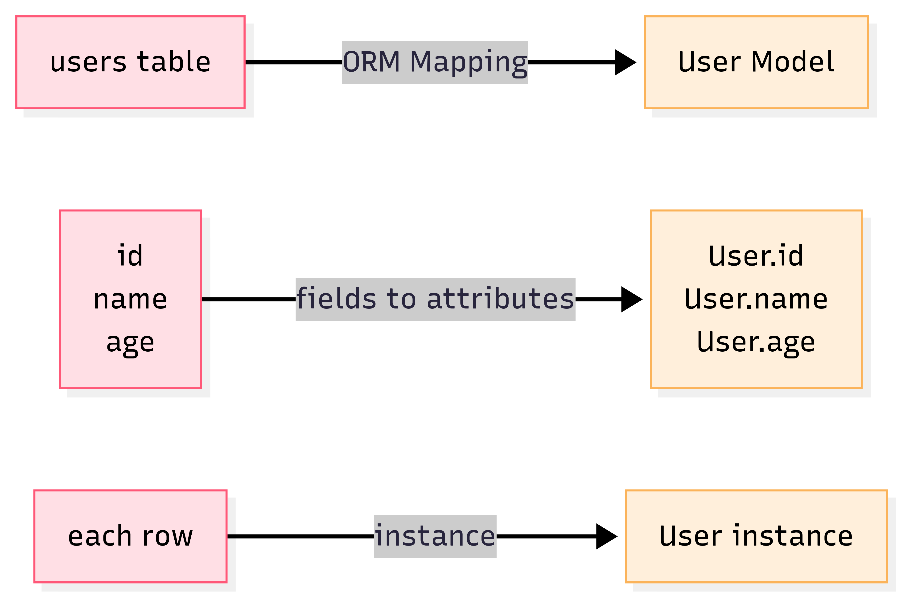

ORM 是什麼？
在上一篇 SQL 新手入門
裡，我們學會了用 SQL 操作資料庫的基本 CRUD，
但當網站越寫越大，每次都要寫一大堆 SQL 指令，難免覺得繁瑣又容易出錯。
這時候使用 ORM（Object-Relational Mapping，物件關聯對應） 可以直接「操控」資料庫，不用每次都寫 SQL。
- ORM (物件關聯對應) 顧名思義就是將關聯式資料庫(Relational Database )的資料，映射到物件(Object)之中。
- 白話一點來說，就是 ORM 是一種技術，能把關聯式資料庫（Relational Database）裡的表格資料，自動轉換成程式語言裡的物件。這樣一來，你可以像操作 Python 的物件一樣，輕鬆進行資料的新增、查詢、修改和刪除，不需要再自己寫繁瑣的 SQL 指令。
在開始之前，我們來說說 SQL 有哪些缺陷以及 ORM 存在的必要性。
為什麼需要 ORM？
- 程式碼和 SQL 混在一起，難維護
- 常常拼錯 SQL，出錯找半天
- 不同資料庫 SQL 語法還不一樣
- 想用 Python 直接操作資料表、欄位
ORM 出現後，你只要跟物件打交道，ORM 可以幫你自動轉換成 SQL。 (像是程式語言和資料庫中間的翻譯官)
ORM 怎麼運作？
“資料表” 好比一個 “Excel 表格”
- ORM 幫你把「表格」翻譯成程式語言的「類別 Class」
- 「欄位」就像物件的「屬性 Attribute」
- 「一列資料」對應「一個類別的實例（object instance）」
圖示說明：
ORM 物件與資料表關聯範例
範例資料表 :
| id | name | age |
|---|---|---|
| 1 | Amy | 25 |
| 2 | Bob | 22 |
Model 類別定義 (Django 為例) :
|
|
|
|
資料表的每一列（row）＝ 一個物件（object instance）
用 ORM 操作資料庫 vs 傳統 SQL 對照
| 操作 | SQL 指令 | Django ORM 實作 |
|---|---|---|
| 新增資料 | INSERT INTO users (name, age) VALUES ('Amy', 25); |
User.objects.create(name='Amy', age=25) |
| 查詢全部 | SELECT * FROM users; |
User.objects.all() |
| 查詢特定 | SELECT * FROM users WHERE age > 18; |
User.objects.filter(age__gt=18) |
| 更新資料 | UPDATE users SET age=26 WHERE name='Amy'; |
user = User.objects.get(name='Amy')user.age = 26user.save() |
| 刪除資料 | DELETE FROM users WHERE name='Amy'; |
user = User.objects.get(name='Amy')user.delete() |
Django ORM 基本語法示範
1️⃣ 定義 Model（資料表）
|
|
2️⃣ 新增資料（Create）
|
|
3️⃣ 查詢資料（Read）
|
|
4️⃣ 更新資料（Update）
|
|
5️⃣ 刪除資料（Delete）
|
|
不過，雖然 ORM 讓資料庫操作更直覺、易讀，但在處理複雜查詢、效能優化或跨框架遷移時， 有時還是需要熟悉 SQL，才能避免隱藏的陷阱與效能瓶頸。
ORM 的優缺點
| 優點 | 缺點 |
|---|---|
| 1. 用程式語言操作資料表，直覺好讀 | 1. 某些複雜查詢 ORM 不夠彈性 |
| 2. 可減少手寫 SQL 出錯 | 2. ORM 產生的 SQL 可能不夠最佳化（N+1 問題） |
| 3. 注入風險(資料被惡意指令篡改或竄改的危險) | 3. 初學者容易忽略資料庫性能調校 |
| 4. 資料庫換成 MySQL/PG/SQLite 幾乎不用改程式 | 4. ORM 有學習曲線＝剛學需適應新用法，熟悉後更順手。 |
補充：「N+1 問題」指 ORM 產生太多查詢，導致效能變差。可以用 select_related、prefetch_related 等優化。
常見 Q&A
Q1. 用 ORM 就不用學 SQL 嗎？
基本 CRUD 沒問題，但遇到複雜查詢還是要補點 SQL 基礎，才能寫 raw SQL 或 debug ORM 問題。
Q2. ORM 支援哪些資料庫？
常見如 MySQL、PostgreSQL、SQLite…各大框架 ORM 幾乎都支援。
Q3. ORM 真的完全取代 SQL 嗎？
大多數情境可以，但像資料遷移（migrate）、複雜聚合或特殊優化，有時還是得用 SQL。
Q4. ORM 會幫忙防止 SQL 注入嗎？
只要用 ORM 提供的查詢語法，不拼接字串，基本都能防注入！
腦力激盪
-
用 ORM 新增一筆 User 資料，怎麼寫？
-
怎麼查詢所有年齡大於 18 歲的使用者？
-
ORM 有哪些場景用起來比 SQL 方便？
-
你遇過什麼 ORM 出錯的狀況？（如 N+1 查詢）
（參考答案）
- 用 ORM 新增一筆 User 資料，怎麼寫？
|
|
- 怎麼查詢所有年齡大於 18 歲的使用者？
|
|
-
ORM 有哪些場景用起來比 SQL 方便？
-
直接存取 Python 物件屬性，不用再記一堆 SQL 字串
-
結構調整（migrate）時，程式碼和資料表自動同步
-
更容易撰寫單元測試
-
-
你遇過什麼 ORM 出錯的狀況？（如 N+1 查詢）
-
查詢關聯資料時產生大量 SQL（N+1 問題）
-
條件寫錯，資料沒查到或誤刪
-
model 定義和資料表不同步導致錯誤
-
忘記 save()、delete()，資料沒更新
-
延伸
這篇帶你入門 ORM 的原理與基本用法。如果你對資料庫「關聯」感興趣，之後將會介紹：
-
一對多、多對多資料表關聯怎麼設計？
-
ORM 怎麼處理表關聯的查詢？
-
ORM 進階優化技巧（如 select_related）